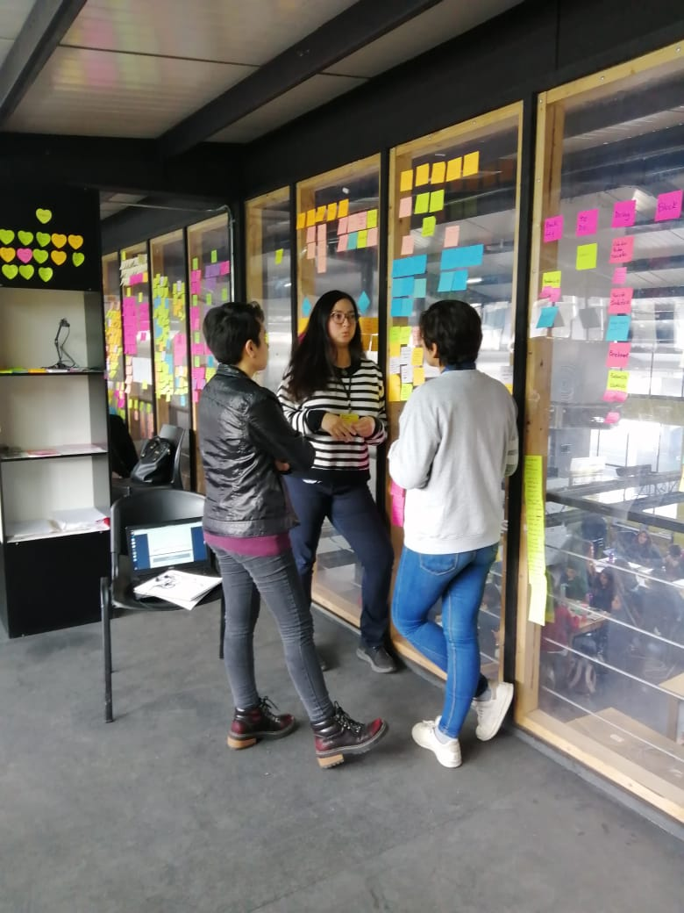
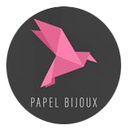
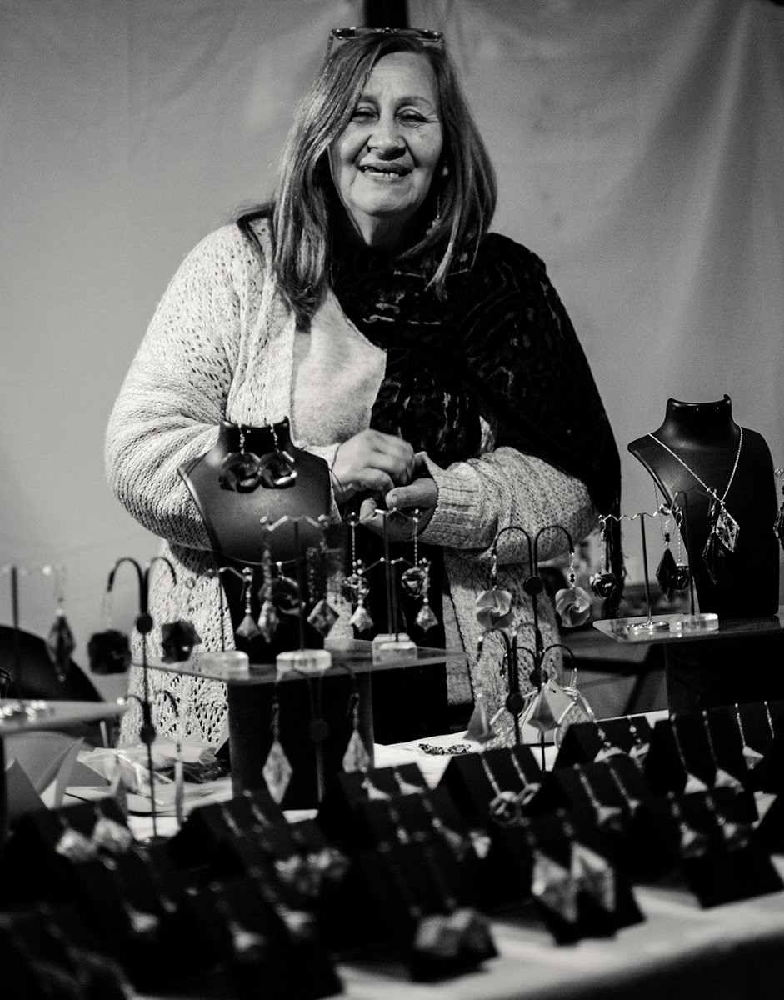

<!DOCTYPE html>
<html>
</html>
<head>
  <meta charset="utf-8">
  <meta http-equiv="X-UA-Compatible" content="IE=edge">
  <title>Creative - Bootstrap Portfolio Theme by Bootstrapious.com</title>
  <meta name="description" content="">
  <meta name="viewport" content="width=device-width, initial-scale=1">
  <meta name="robots" content="all,follow">
  <!-- Bootstrap CSS-->
  <link rel="stylesheet" href="vendor/bootstrap/css/bootstrap.min.css">
  <!-- Font Awesome CSS-->
  <link rel="stylesheet" href="vendor/font-awesome/css/font-awesome.min.css">
  <!-- Google fonts - Roboto-->
  <link rel="stylesheet" href="https://fonts.googleapis.com/css?family=Roboto:400,300,700,400italic">
  <!-- owl carousel-->
  <link rel="stylesheet" href="vendor/owl.carousel/assets/owl.carousel.css">
  <link rel="stylesheet" href="vendor/owl.carousel/assets/owl.theme.default.css">
  <!-- theme stylesheet-->
  <link rel="stylesheet" href="css/style.default.css" id="theme-stylesheet">
  <!-- Custom stylesheet - for your changes-->
  <link rel="stylesheet" href="css/custom.css">
  <!-- Favicon-->
  <link rel="shortcut icon" href="img/favicon.png">
  <!-- Tweaks for older IEs--><!--[if lt IE 9]>
    <script src="https://oss.maxcdn.com/html5shiv/3.7.3/html5shiv.min.js"></script>
    <script src="https://oss.maxcdn.com/respond/1.4.2/respond.min.js"></script><![endif]-->
</head>
<body>
  <div id="all">
    <div class="container-fluid">
      <div class="row row-offcanvas row-offcanvas-left"> 
        <!--   *** SIDEBAR ***-->
        <div id="sidebar" class="col-md-4 col-lg-3 sidebar-offcanvas">
          <div class="sidebar-content">
            <h1 class="sidebar-heading"> <a href="index.html">Carolina Lizarde</a></h1>
            <p class="sidebar-p">Diseñadora UX </p>
            <ul class="sidebar-menu">
                <!-- Link-->
                <li class="sidebar-item"><a href="index.html" class="sidebar-link active">Proyectos</a></li>
                <!-- Link-->
                <li class="sidebar-item"><a href="about.html" class="sidebar-link">Sobre mí</a></li>
                <!-- Link-->
                <li class="sidebar-item"><a href="contact.html" class="sidebar-link">Contacto</a></li>
            </ul>
            <p class="social"><a href="#" data-animate-hover="pulse" class="external facebook"><i class="fa fa-facebook"></i></a><a href="#" data-animate-hover="pulse" class="external gplus"><i class="fa fa-google-plus"></i></a><a href="#" data-animate-hover="pulse" class="external twitter"><i class="fa fa-twitter"></i></a><a href="#" title="" class="external instagram"><i class="fa fa-instagram"></i></a><a href="#" data-animate-hover="pulse" class="email"><i class="fa fa-envelope"></i></a></p>
            <div class="copyright text-center text-md-left">
              <p class="credit">&copy;2019 Carolina Lizarde</a></p>
              <!-- Please do not remove the backlink to us, unless you support the development at http://bootstrapious.com/donate. It is part of the license conditions. Thanks for understanding :)        -->
            </div>
          </div>
        </div>
        <!--   *** SIDEBAR END ***  -->
        <!--   *** DETAIL ***-->
        <div class="col-md-8 col-lg-9 content-column white-background">
          <div class="small-navbar d-flex d-md-none">
            <button type="button" data-toggle="offcanvas" class="btn btn-outline-primary"> <i class="fa fa-align-left mr-2"></i>Menu</button>
            <h1 class="small-navbar-heading"> <a href="index.html">Carolina Lizarde</a></h1>
          </div>
          <div class="row">
            <div class="col-xl-10">
              <div class="content-column-content">
                <h1>Papel Bijoux</h1>
               <h2>El desafío</h2>
                <p class="lead">En este proyecto emprendedores que necesitan ayuda para potenciar su negocio través de la tecnología se contactan con Laboratoria, con el objetivo principal de desarrollar una propuesta de producto digital, en este caso para Papel Bijoux emprendimiento de joyería y decoracion en origami creado por Eliana Esquivel.
                </p>
                <div id="main-slider" class="owl-carousel owl-theme">
                  <div class="item"></div>
                  <div class="item"></div>
                  <div class="item"></div>
                </div>
                <!-- /#main-slider-->
                <h3>Contexto</h3>
                <p>Papel Bijoux nace a raíz de la necesidad de independencia económica de Eliana sumado a que constantemente creaba distintas piezas de joyería con múltiples técnicas aprendidas en sus trabajos anteriores. En un punto se dio cuenta que estaba acumulando cientos de ellas y muchas personas le comentaban sobre la calidad y la belleza de su trabajo.
                  Por lo cual decidió tomar el reto de emprender, para así lograr la independencia económica que buscaba y satisfacer su necesidad constante de crear.
                  Con el tiempo ella pudo lograr llegar a vender en muchas ferias dentro y fuera de la región metropolitana, pero comenzó a considerar la opción de llevar su emprendimiento al mundo digital, ya que el hecho de pertenecer a muchas asociaciones de emprendedores y movilizarse le quitaban preciado tiempo de creación.
                </p>
                <div class="item"></div> 
                <h4>Entendimiento del problema y la industria</h4>
                <p>En esta parte del proceso pudimos entender la importancia de los Ecommerce para para la venta de productos, la cual es un recurso cada vez más utilizado por los emprendedores al momento de diversificar sus posibilidades de ventas. Tomando en cuenta que el crecimiento de las ventas a través de Ecommerce en Chile ha crecido casi un 40% el último año. </p>
                <h4>Entrevista con el cliente</h4>
                <p>Realizamos dos entrevistas la primera con Catalina encargada de las nuevas redes sociales creadas para el emprendimiento y la segunda con Eliana la artista de las cuales pudimos rescatar lo siguiente. </p>
                <p>Entrevista a Catalina</p>
                <ul>
                <li>La cuenta de instagram fue creada recientemente para satisfacer la necesidad de vender a través de internet.</li>
                <li>No existen ventas a través de internet hasta el momento.</li>
                <li>No tiene catálogo.</li>
                <li>No posee un protocolo de entregas</li>
                <li>Quiere realizar una campaña de marketing digital para aumentar sus seguidores.</li>
                </ul>
                <p>Entrevista a Eliana</p>
                <ul>
                <li>La cuenta de instagram fue creada recientemente para satisfacer la necesidad de vender a través de internet.</li>
                <li>No existen ventas a través de internet hasta el momento.</li>
                <li>No tiene catálogo.</li>
                <li>No posee un protocolo de entregas</li>
                <li>Quiere realizar una campaña de marketing digital para aumentar sus seguidores.</li>
                <li>Quienes conocen la pagina son personas conocidas o personas que se han interesado al ver el puesto en ferias</li> 
                </ul>
            
                <h4>Observacion Contextual</h4>
                <p>Se realizó una observación contextual con usuarios en la feria donde expone sus productos, debido a que ella tiene muy claro cuál es su público objetivo pero no posee un seguimiento de las personas que compran sus productos, por lo cual debemos acercarnos directamente con los usuarios.</p>
                </p>
                <div class="item"></div> 
                <h4>Análisis de referentes</h4>
                <p>Mediante un análisis de referentes, realizamos una investigación comparativa de distintos sitios web dedicados a la venta de bisuteria y decoracion. Son pocos los referentes que realicen este tipo de ventas en chile, por lo cual nos enfocamos en la gran oportunidad que tiene este emprendimiento al ser único en cuanto a sus materias primas y trabajo. 
                  Podemos determinar de los referentes encontrados la forma en la que venden sus productos es fundamental, mostrar el trabajo detrás de cada uno de ellos.
                </p>
                <ul
                ></ul>
              </div>
            </div>
          </div>
        </div>
      </div>
    </div>
  </div>
  <!-- JavaScript files-->
  <script src="vendor/jquery/jquery.min.js"></script>
  <script src="vendor/popper.js/umd/popper.min.js"> </script>
  <script src="vendor/bootstrap/js/bootstrap.min.js"></script>
  <script src="vendor/jquery.cookie/jquery.cookie.js"> </script>
  <script src="vendor/owl.carousel/owl.carousel.min.js"></script>
  <script src="vendor/masonry-layout/masonry.pkgd.min.js"></script>
  <script src="js/front.js"></script>
</body>